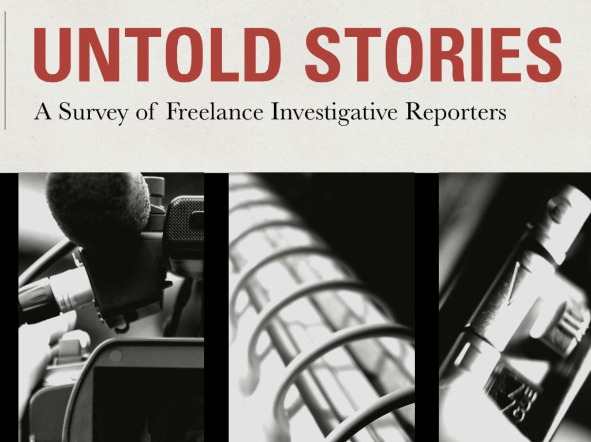
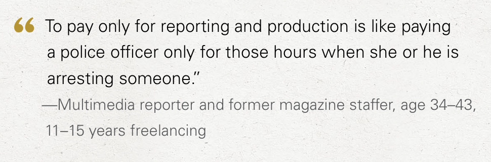
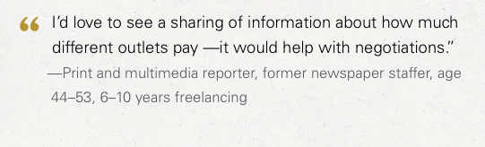
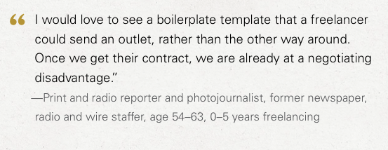
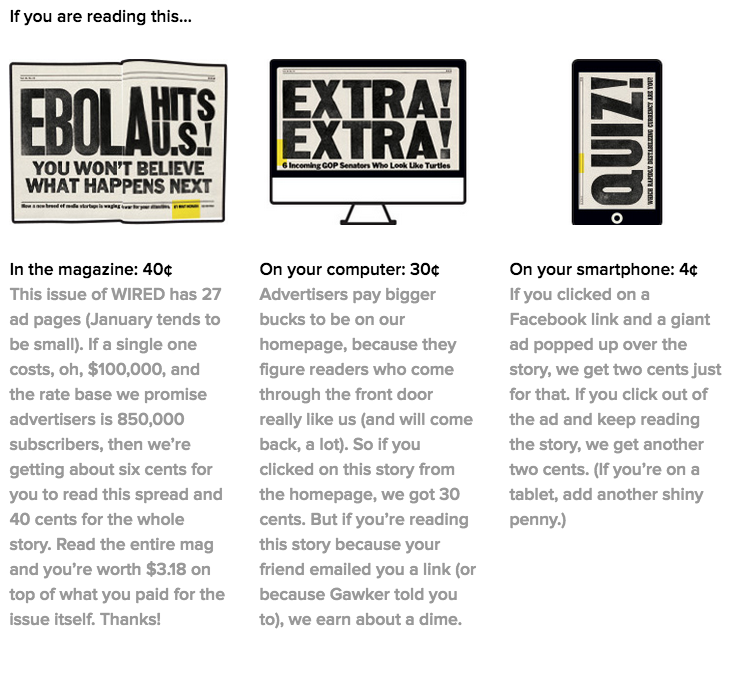

Earlier this month Project Word released a one-of-a-kind survey on the ways that freelance journalists make their livings. The 34-page report, titled “Untold Stories: A Survey of Freelance Investigative Reporters,” was part of a collaboration between 22 different journalism organizations and included responses from more than 200 investigative reporters. To no one’s surprise, the survey found that freelances are in in dire straights.Among the more shocking revelations were that:
44% of respondents said they were being paid less now than 5 years ago. 22% said that their income was half no than what it used to be.
Inadequate support for investigative journalism has deprived the public of a minimum of nearly 600 stories that could have served the public good.
92% of 137 freelancers reported experiencing “anxiety on a daily basis over finances.


Screen Shot 2015-02-25 at 1.13.50 PM
The study lays out the plight of increasingly marginal freelancers in visceral detail, and peppers in writer’s own language for how they have struggled to make their livings. Amidst bad contracts, limited reprint rights, declining pay, endless debt, and anxiety ultimately freelance investigative journalism is more charity than a career path.Here are my favorite three quotes:And since it pertains to the work I’ve been doing to crowdsource journalism rates.


Screen Shot 2015-02-25 at 2.10.55 PM
This also seems like a great idea:


Screen Shot 2015-02-25 at 2.10.28 PM
While it expertly lays out the plight of freelance reporters, the survey fails to suggest any innovative solutions. It calls for increased levels of external funding, streamlined grant processes and logistical support for in-depth reporting projects, but fails to take into account the increasingly predatory practices that publishers use to take advantage of freelance labor. It is true that some publications are struggling to make ends meet. However, even the publications who are almost literally rolling in giant piles of money continually fail to share their revenues with their writers.Take, for instance, this excerpt from
‘s December piece in Wired titled “
Inside the Buzz-Fueled Media Startups Battling for Your Attention
” which explores how big media companies are adapting to new distribution models and reaping fortunes in the process. He points to the multi-billion dollar valuations of Vice, Vox and Buzzfeed and breaks down the reliable revenue streams at his own publication. One amazing infographic shows exactly how much money Wired made that issue:


Screen Shot 2015-02-25 at 9.09.07 AM
According to those numbers, the print issue that Honan’s article appeared in grossed a minimum of $2.7 million in December. While I don’t know exactly what web traffic Wired gets, it is likely that the magazine earned at least another million online. Compare that to what they paid their journalists. I checked out the masthead and started counting stories. The issue contained only 3 proper multi-page feature articles and 23 one to two page stories. All together the magazine barely published 20,000 words. Since Wired pays its writers $2-$3 per word, that means at the very most the magazine shelled out the equivalent of a single half-page of advertising on journalism. While Honan argues that the future of new media will depend on the quality of the articles that they write, it’s clear that publications do not value their writers enough to pay them fairly.
Instead of simply taking the story that magazine fortunes are declining at face value, it would have been more helpful for Project Word to hold publishers accountable for the precarious positions that they put their workers in. Solving writerly woes shouldn’t depend on charity from external funding institutions, but reforming the existing markets to include journalists in the proceeds of the business.
On his own part, Honan has since left Wired and gone on to become a bureau chief at Buzzfeed.